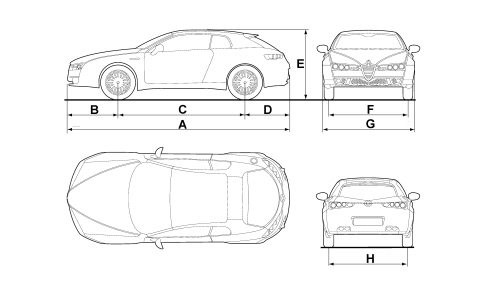
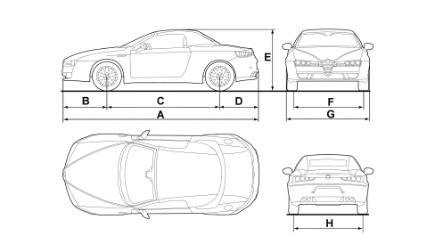

VEHICLE DIMENSIONS
- Path
- Technical Data > PROJECT SPECIFICATIONS AND DESCRIPTIONS > VEHICLE DIMENSIONS
- Kind
- technical data / specifications
- Applies to
- all engines; all production periods
- Interactive page
- https://sloeber94.github.io/elrnDB-aBrrSpdr/en/#/946001268
Applies to: all engines; all production periods
Dimensions are expressed in mm and refer to the vehicle equipped with its original tyres.
Minimum variations in measurements with optional tyres fitted.
Height is measured with vehicle unladen.
Alfa Brera
2.2 JTS | 3.2 JTS | 2.4 JTD 20v | |
|---|---|---|---|
A (mm) | 4410 | 4410 | 4410 |
B (mm) | 1000 | 1000 | 1000 |
C (mm) | 2528 | 2528 | 2528 |
D (mm) | 882 | 882 | 882 |
E (mm) | 1341 | 1341 | 1341 |
F (mm) | 1593 1579 (*) | 1593 1579 (*) | 1593 1579 (*) |
G (mm) | 1830 | 1830 | 1830 |
H (mm) | 1573 1559 (*) | 1573 1559 (*) | 1573 1559 (*) |
Luggage compartment capacity (V.D.A. standards): 220 dm3 or 300 dm3 depending on the version

Alfa Spider
2.2 JTS | 3.2 JTS | 2.4 JTD 20v | |
|---|---|---|---|
A (mm) | 4393 | 4393 | 4393 |
B (mm) | 1000 | 1000 | 1000 |
C (mm) | 2528 | 2528 | 2528 |
D (mm) | 865 | 865 | 865 |
E (mm) | 1318 (°) 1370 (°°) | 1318 (°) 1370 (°°) | 1318 (°) 1370 (°°) |
F (mm) | 1593 1579 (*) | 1593 1579 (*) | 1593 1579 (*) |
G (mm) | 1830 | 1830 | 1830 |
H (mm) | 1575 1559 (*) | 1575 1559 (*) | 1575 1559 (*) |
Luggage compartment capacity (V.D.A. standards): 200 dm3 (without wheel housing) or 253 dm3 (with wheel housing)
